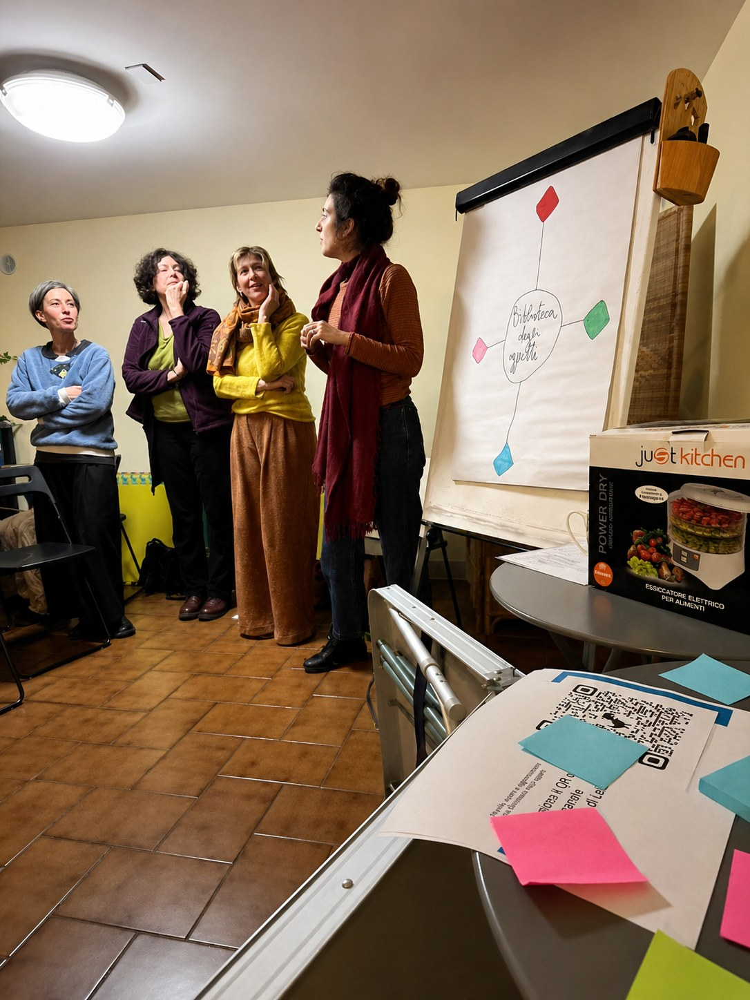
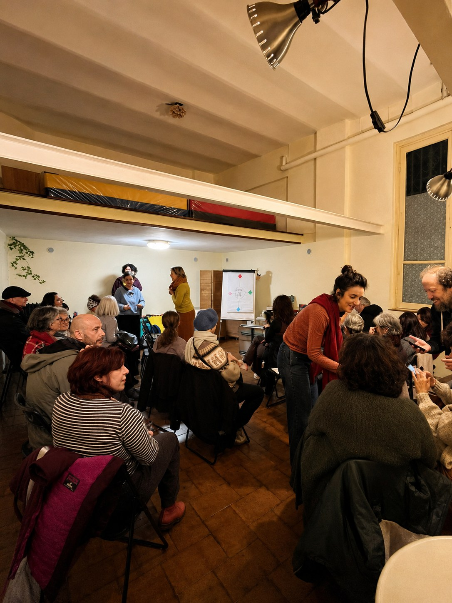
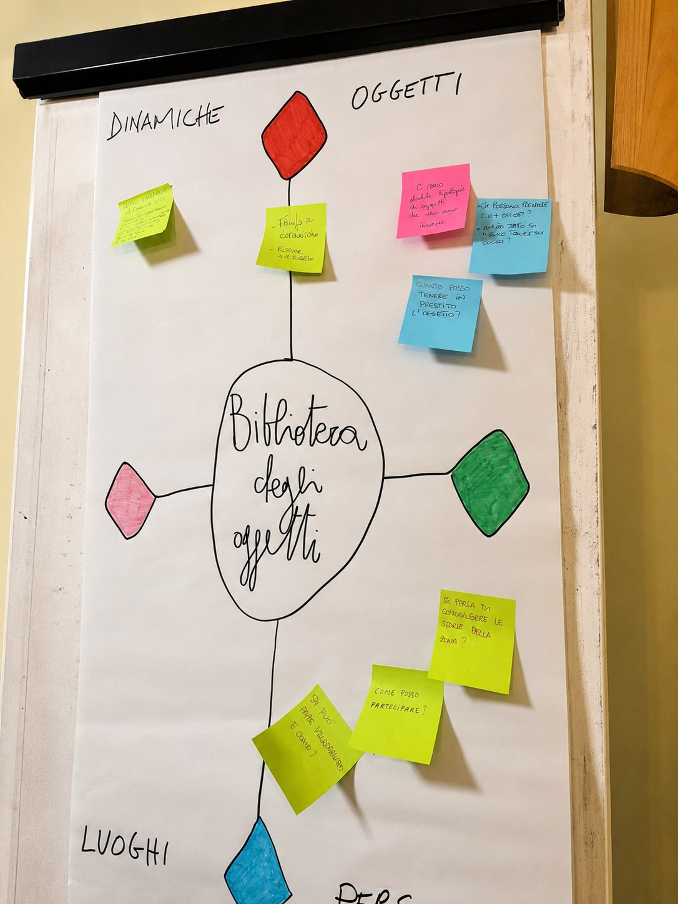

Tartuca · 26 marzo 2026
Prima presentazione del progetto
Il primo incontro pubblico della biblioteca degli oggetti è stato anche il primo passo di un percorso collettivo. Alla Tartuca ci siamo incontratə per immaginare insieme cosa avrebbe potuto diventare questo progetto. Più che una presentazione, è stata una conversazione aperta sul quartiere, sui bisogni e sul desiderio di costruire un luogo di condivisione.